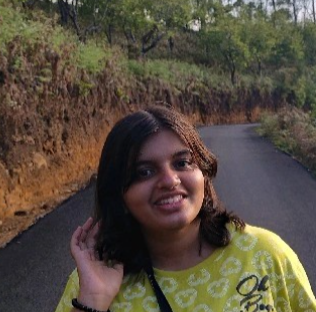

Hi! This is Vaibhavi Shastri!

Hey there! Let me give a quick introduction. I am an Information Science Undergraduate with practical experience in Full Stack Development and AI/ML. I have built web apps using the MERN stack and developed intelligent solutions using Python and Machine Learning. I am skilled in designing responsive UIs, building RESTful APIs, and working with real-world datasets. I am also passionate about solving real problems through code and I am eager to grow as a Software Development Engineer.
My Educational Background
- RNS Institute of Technology, Bengaluru (2022-Present)
Bachelor of Engineering- Information Science
- Viveka PU College, Kota (2020-2022)
Pre University- PCMC
- Viveka English Medium High School, Kota (2017-2020)
Matriculation (10 Grade) 97.6th
My Skills
- Programming Languages: Python, Java, C
- Web Development: HTML, CSS, MERN Stack (MongoDB, Express.js, React.js, Node.js), REST APIs
- Databases: MongoDB, MySQL
- Tools & Platforms:Git, GitHub, Streamlit, VS Code
- Data Visualization: Tableau, PowerBI
- Concepts: OOP, Data Structures & Algorithms, Machine Learning
My Certifications
- Azure AI Fundamentals, Microsoft
- The Complete Python Bootcamp From Zero to Hero in Python, Udemy
- Java Programming Fundamentals, Infosys Springboard.
- Data Structures and Algorithms: The Complete Masterclass, Infosys Springboard.
- TechA MERN Stack, Infosys Springboard
- Fundamentals of Machine Learning and Artificial Intelligence, AWS Training and Certification
My Publications and Conferences
- Presented research paper titled “OptiRAG: Optimizing Resume Screening Using RAG” at ICDCCS-2025 Conference
- Presented research paper titled “A Comparative Study of Deep Learning Architectures for Robust Kannada Handwritten Digit Classification” at ICANCS- 2025 Conference
- Awarded Best Paper Award at ICANCS-2025 Conference
A Sneak Peek to My Projects
My Experience
- AI Student Trainee- Samsung Innovation Campus (Nov 2024- Sep 2025):I completed a 350-hour Artificial Intelligence training program under Samsung Innovation Campus, gaining hands-on experience in Data Science, Machine Learning, NLP, and Deep Learning. I also worked with Python libraries (NumPy, Pandas, TensorFlow, Keras) for data preprocessing, visualization, and building AI models, and successfully applied these skills in a capstone project.
Let's Connect!
📧 vaibhavishastri.m@gmail.com
🔗 LinkedIn: Vaibhavi Shastri
💻 GitHub: Vaibhavi-Shastri